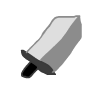
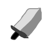
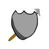
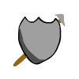
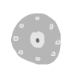
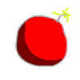
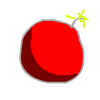
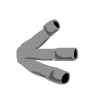
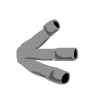

Shadow Rhythm é um jogo do estilo Rítmico-Tower Defense.
Ao som do concerto de Klaus, no mesmo ritmo, você deve realizar seus rituais por meio dos direcionais para executar suas ações. As invocações dependem de mana, nisso, deve-se consegui-las primeiro. Quando houver mana o suficiente, poderá invocar monstros. Cada um deles possui atributos e características diferentes para contribuir com estratégias contra seus inimigos. Sobreviva na base do ritmo + estratégia e retire-os do cemitério!


 



 

Quando o guarda recebe algum dano, ele fica fixo no seu lugar e recupera sua vida.

O escudeiro não ataca, mas (as vezes) fica na frente de uma unidade amiga recuperando sua vida e a protegendo.
 

O kamikaze vai correndo na sua lane e explode, dando dano massivo em área.


O buraco negro aparece em um lugar aleatório na lane escolhida, espera um pouco e então mata todos em volta.


A sombra aparece em um lugar aleatório e fica fixa dando dano nos inimigos que passarem por ela. Apenas o inimigo com uma tocha pode atingir a sombra.
 

O bombardeiro vai lentamente na sua lane, e dá dano tanto na sua lane quanto nas lanes acima e abaixo.

Quando o zumbi mata um inimigo, ele vira outro zumbi.